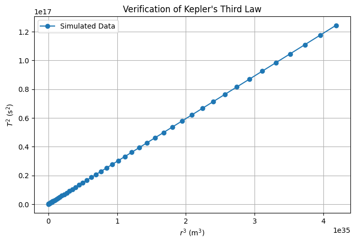

Problem 1
Orbital Period and Radius: Kepler's Third Law
Task 1. Derivation of Kepler’s Third Law
For a small object orbiting a much larger central body in a circular orbit, the gravitational force provides the necessary centripetal force:
- \(G\) : Gravitational constant
- \(M\) : Mass of the central body
- \(m\) : Mass of the orbiting object
- \(r\) : Orbital radius
- \(v\) : Orbital velocity
Cancelling \(m\) and solving for velocity:
The orbital period \(T\) is the time to complete one full orbit:
Substituting \(v\):
Squaring both sides:
This shows that:
which is Kepler’s Third Law—the square of the orbital period is proportional to the cube of the orbital radius.
Task 2. Implications of Kepler’s Third Law in Astronomy
1. Calculating Planetary Masses
Kepler’s Third Law states:
Rearranging to solve for the mass of the central body:
This allows astronomers to determine the mass of a star, planet, or moon by measuring the orbital period \(T\) and radius \(r\) of an orbiting object.
- Example: The mass of the Sun can be calculated using Earth's orbital data.
- Used to estimate the mass of exoplanets by analyzing their effect on nearby objects.
2. Measuring Distances in Space
If the mass \(M\) is known, the equation:
can be used to calculate the distance of an orbiting body when the period \(T\) is observed.
- Helps determine the distances of moons around planets.
- Essential for mapping planetary systems and calculating exoplanet orbits.
3. Applications in Modern Astronomy
- Exoplanet Discovery: Detecting distant planets by observing how their gravitational pull affects the motion of nearby stars.
- Galaxy Mass Estimation: Using orbital speeds of stars to infer the mass distribution of galaxies.
- Satellite Navigation: Ensuring stable orbits for artificial satellites and space missions.
Task 3. Real-World Examples of Kepler’s Third Law
1. The Moon’s Orbit Around Earth
The Moon follows a nearly circular orbit around Earth. Using Kepler’s Third Law:
we can verify that the Moon’s orbital period (\(T \approx 27.3\) days) and orbital radius (\(r \approx 3.84 \times 10^8\) m) are consistent with Earth's mass (\(M = 5.97 \times 10^{24}\) kg).
Key Insights:
- Confirms Earth's gravitational influence on the Moon.
- Helps predict lunar positions for astronomy and navigation.
- Useful in space missions, such as Apollo landings and satellite positioning.
2. Planetary Orbits in the Solar System
For planets orbiting the Sun, Kepler’s Third Law simplifies to:
This allows astronomers to predict planetary distances based on their orbital periods.
Example: Earth vs. Mars
- Earth: \(T = 1\) year, \(r = 1\) AU (astronomical unit).
- Mars: \(T \approx 1.88\) years.
- Applying Kepler’s Third Law:
$$ r^3 = T^2 \Rightarrow r = \sqrt[3]{(1.88)^2} \approx 1.52 \text{ AU} $$
which matches Mars’ actual orbit.
Key Applications:
- Planetary exploration: Calculating transfer orbits for space probes.
- Orbital predictions: Understanding gravitational interactions.
- Exoplanet studies: Inferring distances of newly discovered planets.
3. Practical Use in Astronomy and Space Science
- GPS Satellites: Kepler’s Law ensures satellites maintain stable orbits.
- Space Missions: NASA and ESA use it for interplanetary travel.
- Binary Star Systems: Helps determine masses and distances of stars.
Kepler’s Third Law provides a powerful framework to study celestial mechanics, from our Moon’s motion to planetary orbits and even distant exoplanets.
Task 4. Computational Simulation of Circular Orbits
1. Objective
This simulation models a circular orbit using Newton’s laws and verifies Kepler’s Third Law (\(T^2 \propto r^3\)).
2. Python Implementation
The code below simulates a planet orbiting a star and plots its trajectory while verifying the period-radius relationship.
import numpy as np
import matplotlib.pyplot as plt
from scipy.constants import G
# Constants
M_sun = 1.989e30 # Mass of the Sun (kg)
AU = 1.496e11 # 1 Astronomical Unit (m)
year = 3.154e7 # 1 year in seconds
# Function to compute orbital period
def orbital_period(radius, mass=M_sun):
return 2 * np.pi * np.sqrt(radius**3 / (G * mass))
# Generate radius values (0.4 AU to 5 AU)
radii = np.linspace(0.4 * AU, 5 * AU, 50)
periods = np.array([orbital_period(r) for r in radii])
# Verify Kepler's Law (T^2 vs. r^3)
plt.figure(figsize=(8, 5))
plt.plot(radii**3, periods**2, 'o-', label="Simulated Data")
plt.xlabel("$r^3$ (m$^3$)")
plt.ylabel("$T^2$ (s$^2$)")
plt.title("Verification of Kepler's Third Law")
plt.legend()
plt.grid()
plt.show()
